Snake
Jogo de capturar maçãs sem colidir com a parede ou com o próprio corpo.
Abrir Projeto Este site possui recurços de acessibilidade e suporte a leitores de tela.
Este site possui recurços de acessibilidade e suporte a leitores de tela.


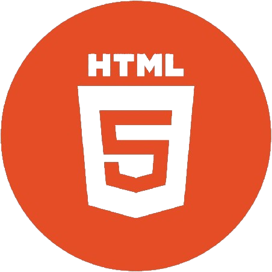
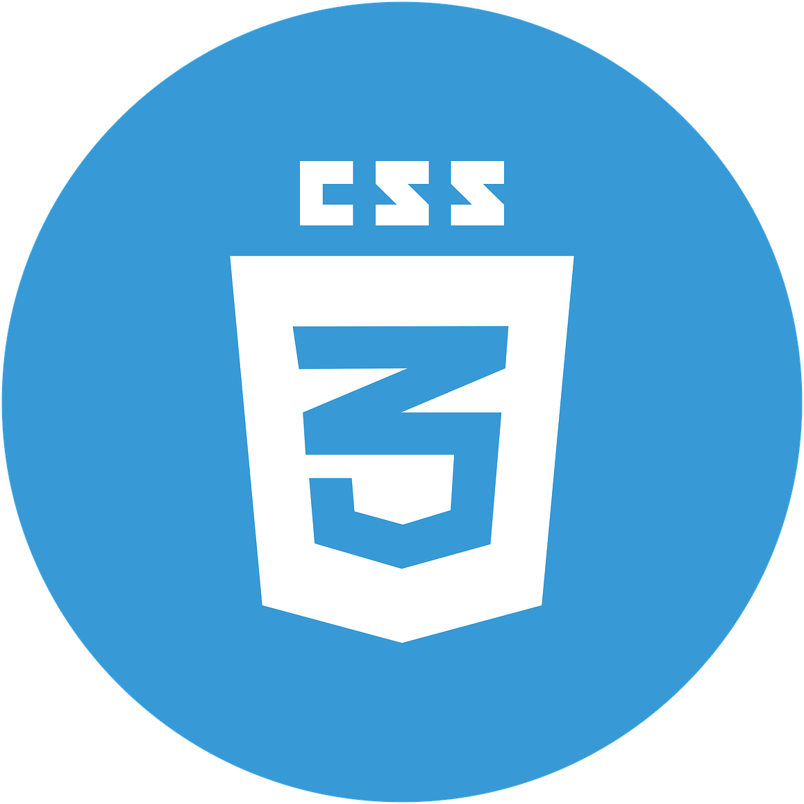


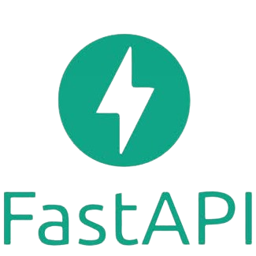
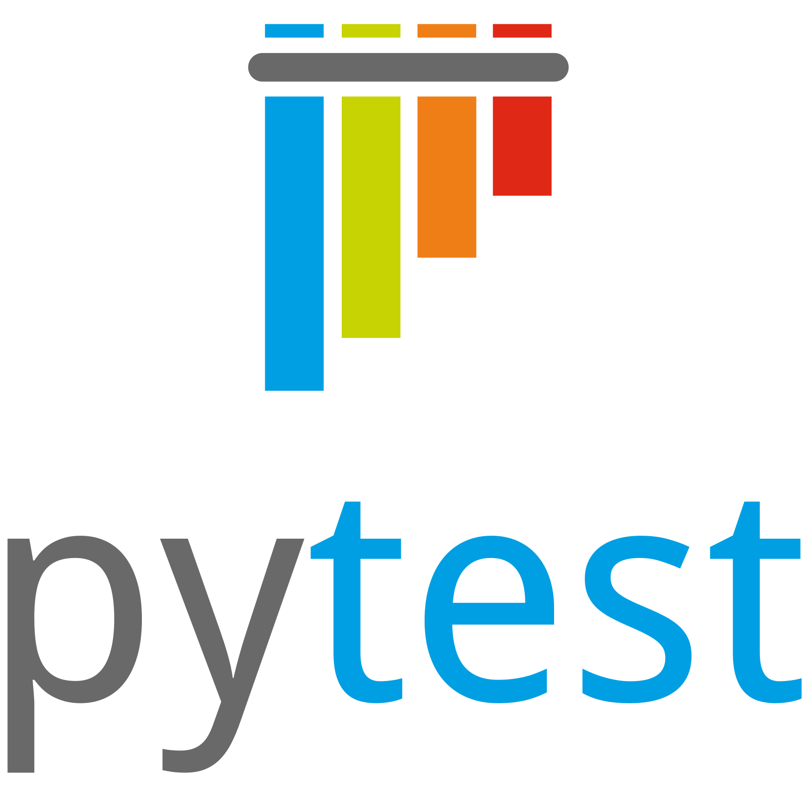
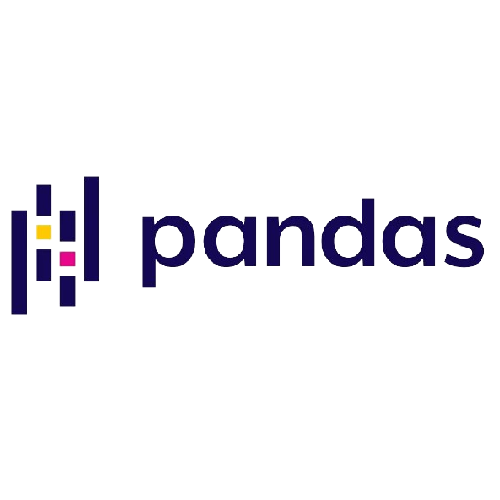

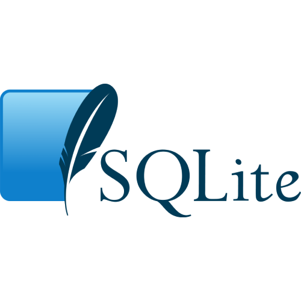

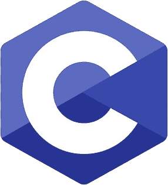
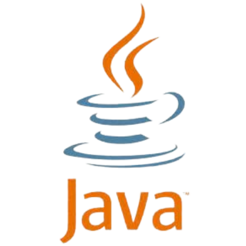
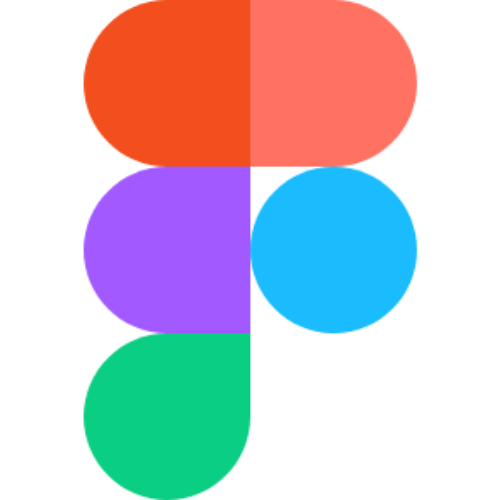

Reúno quatro jogos criados em Python usando Pygame, desenvolvidos no início da minha jornada na programação.
Tecnologias: Python • Pygame
Abrir Repositório
Site desenvolvido para a IELP Engenharia, uma empresa especializada em serviços de engenharia elétrica.
Tecnologias: WordPress • Elementor • Figma
Abrir Projeto
O Busca CEP retorna endereços através de ceps fornecidos. Para este projeto utilizei a API viacep.com.br/ws/"CEP"/json.
Tecnologias: JavaScript • React.js • CSS
Abrir Projeto
Este projeto é um dos meus favoritos e foi um dos meus primeiros. Eu o desenvolvi para ajudar meus professores de Jiu-Jitsu. Quando o criei não tinha muita noção de como funcionava o processo de desenvolvimento de um sistema web. Trata-se de um sistema de gerenciamento de alunos que controla a presença e a ficha técnica, incluindo graduação, peso e todos os requisitos de um atleta.
Tecnologias: Python • Flask • SQLite • JavaScript • CSS • HTML
Abrir ProjetoOlá, seja bem-vindo! Eu me chamo Vítor Viana e sou estudante de Sistemas de Informação na UFF🎓, curso que escolhi devido à minha enorme curiosidade pela tecnologia. Sempre tive interesse em descobrir como os aplicativos, sites e a internet funcionavam, e sempre tive o desejo de aprender a criar meus próprios sistemas. Para mim, é incrível ter uma ideia e poder torná-la realidade através da tecnologia. Além disso, sou uma pessoa que ama esportes e música. Sou lutador de jiu-jitsu, faixa roxa🥋, e sou instrumentista, adoro tocar bateria e fazer um barulho🎶😊.
Atualmente, trabalho de forma autônoma criando sites para empresas. Isso me ajudou bastante a aprimorar minhas habilidades no desenvolvimento front-end e no design de páginas da web. Quando consigo um cliente, a primeira coisa que faço é entender o negócio em que ele trabalha e conhecer seus concorrentes. Somente então começo a etapa de criação do site. Depois de compreender o negócio, começo a criar o design da página junto com o cliente, utilizando o Figma. Após a aprovação do design, passo para a etapa de desenvolvimento. Esta etapa pode variar de acordo com as tecnologias usadas. Dependendo do nível de complexidade do site, posso usar o WordPress ou criar o site utilizando JavaScript, junto com CSS e HTML.
É isso! Falei um pouco sobre mim e sobre o que faço de forma resumida. Espero que tenha gostado do meu site, ele é simples mas fiz com bastante carinho❤.
E se você chegou até aqui, agradeço sua atenção💪🙏!